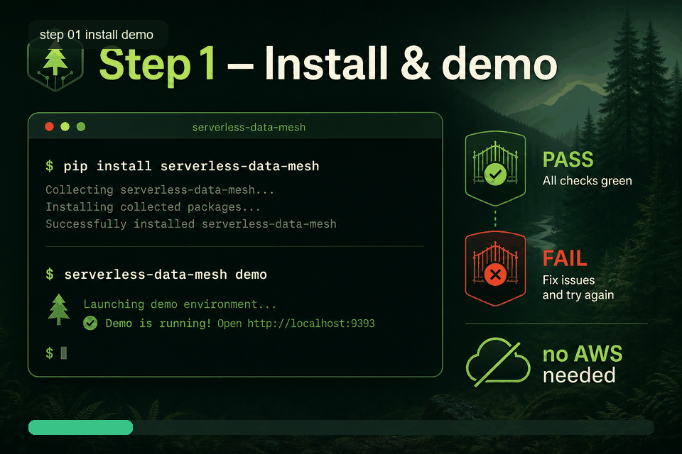

Watch each step like a short demo video. For every screen you see: what to type, what you get, and why it matters. No AWS needed until Step 5.
pip install "serverless-data-mesh" serverless-data-mesh apply --contract examples/medallion-e2e/northstar.mesh.yaml --output examples/medallion-e2e/generated serverless-data-mesh ui --path examples/medallion-e2e/generated --open # Browser opens → http://127.0.0.1:8765/ # Then click Tutorial, or open this page from the UI.
